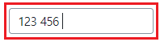
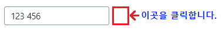
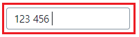
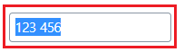
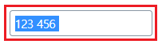
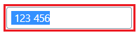
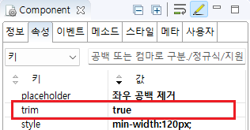
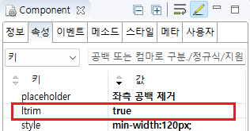
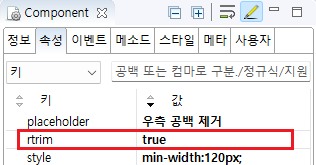

Input의 속성을 사용하여 입력한 데이터 좌우 공백을 제거한 예제입니다.
속성별 기능은 다음과 같습니다.
trim: 좌우 공백을 제거합니다.
ltrim: 좌측 공백을 제거합니다.
rtrim: 우측 공백을 제거합니다.
이 기능은 컴포넌트에서 입력 커서가 벗어날 때 적용됩니다.
기본 설정 - 입력 값 공백 제거 안함
입력 값 좌우 공백 제거
입력 값 좌측 공백 제거
입력 값 우측 공백 제거
예제 영역 '기본 설정'에서 테스트합니다.1
STEP 1: Input에 값 ' 123 456 '을 입력합니다.
시작 문자열과 종료 문자열에 빈 문자열이 포함되어 있습니다.
Image 1.브라우저(Chrome) 실행 예시

2
STEP 2: 컴포넌트의 외부 영역을 클릭하여 커서를 제거합니다.
Image 2.브라우저(Chrome) 실행 예시

3
STEP 3: 실행 결과를 확인합니다.
Input의 입력 영역을 클릭하여 입력 값을 확인합니다. 입력한 값이 ' 123 456 '으로 동일한 것을 확인합니다.
Image 3.브라우저(Chrome) 실행 예시

예제 영역 'trim'에서 테스트합니다.1
STEP 1: Input에 값 ' 123 456 '을 입력합니다.
시작 문자열과 종료 문자열에 빈 문자열이 포함되어 있습니다.
Image 4.브라우저(Chrome) 실행 예시
2
STEP 2: 컴포넌트의 외부 영역을 클릭하여 커서를 제거합니다.
Image 5.브라우저(Chrome) 실행 예시
3
STEP 3: 실행 결과를 확인합니다.
Input의 입력 영역을 클릭하여 입력 값을 확인합니다. 입력한 값이 '123 456'으로 좌우 공백이 제거된 것을 확인합니다.
Image 6.브라우저(Chrome) 실행 예시

예제 영역 'ltrim'에서 테스트합니다.1
STEP 1: Input에 값 ' 123 456 '을 입력합니다.
시작 문자열과 종료 문자열에 빈 문자열이 포함되어 있습니다.
Image 7.브라우저(Chrome) 실행 예시
2
STEP 2: 컴포넌트의 외부 영역을 클릭하여 커서를 제거합니다.
Image 8.브라우저(Chrome) 실행 예시
3
STEP 3: 실행 결과를 확인합니다.
Input의 입력 영역을 클릭하여 입력 값을 확인합니다. 입력한 값이 '123456 "으로 좌측 공백이 제거된 것을 확인합니다.
Image 9.브라우저(Chrome) 실행 예시

예제 영역 'rtrim'에서 테스트합니다.1
STEP 1: Input에 값 ' 123 456 '을 입력합니다.
시작 문자열과 종료 문자열에 빈 문자열이 포함되어 있습니다.
Image 10.브라우저(Chrome) 실행 예시
2
STEP 2: 컴포넌트의 외부 영역을 클릭하여 커서를 제거합니다.
Image 11.브라우저(Chrome) 실행 예시
3
STEP 3: 실행 결과를 확인합니다.
Input의 입력 영역을 클릭하여 입력 값을 확인합니다. 입력한 값이 ' 123 456'으로 우측 공백이 제거된 것을 확인합니다.
Image 12.브라우저(Chrome) 실행 예시

1
Input의 속성을 정의합니다.
[필수] trim="true"
[default: false, true] 문자열 양쪽 공백 제거 여부
Image 13.웹스퀘어 스튜디오의 Component View - 속성 설정 예시

Example 1.Source
<!-- input 의 소스 본문 예시 --> <xf:input trim="true"> </xf:input>
1
Input의 속성을 정의합니다.
[필수] ltrim="true"
[default: false, true] 문자열 왼쪽 공백 제거 여부
Image 14.웹스퀘어 스튜디오의 Component View - 속성 설정 예시

Example 2.Source
<!-- input 의 소스 본문 예시 --> <xf:input ltrim="true"> </xf:input>
1
Input의 속성을 정의합니다.
[필수] rtrim="true"
[default: false, true] 문자열 오른쪽 공백 제거 여부
Image 15.웹스퀘어 스튜디오의 Component View - 속성 설정 예시

Example 3.Source
<!-- input 의 소스 본문 예시 --> <xf:input rtrim="true"> </xf:input>
ltrim
trim
rtrim